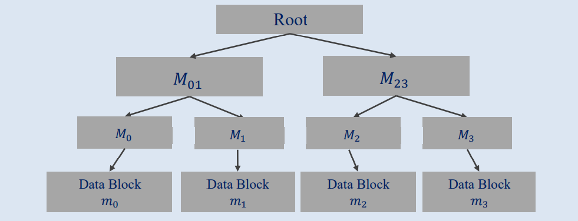

一、密码学原理
1.1 杂凑函数
①定义
杂凑函数（散列函数、哈希函数），能够把任意长度的输入消息映射成固定长度的输出消息。其函数计算模型表达式为：y = H(x) , {0,1}*->{0,1}
H(x)一般称为x的散列值、Hash值或信息摘要。
输出长度一般为128，160，192，256，384，512bits等。
②性质
快速性 任给一个值x，找到其散列值H(x)是容易的。
单向性（抗原性） 任给一个y=H(x)，找到其原值x是困难的。
弱抗碰撞 对于x1，寻找x2，使得H(x1)=H(x2)是困难的。
强抗碰撞 寻找两个值x1!=x2，使二者满足H(x1)=H(x2)是困难的。是容易的。
③抗碰撞杂凑函数
对于单项杂凑函数而言【单项杂凑函数：满足单向性的杂凑函数】
给定一个值M1，寻找M2使得H(M1)=H(M2)在计算上不可行，该单向杂凑函数被称为弱单向杂凑函数。
找到任意一对M，M'，M!=M'，H(M)=H(M')在计算上不可行，该单向杂凑函数被称为强单向杂凑函数。
④杂凑函数在区块链中的应用
1.数据规范化 将任意长度的消息输出为固定长度消息。

2.压缩函数 将任意长度的消息拆分成n个组，与杂凑初始化值IV一起作为压缩函数的输入。

3.哈希函数与数据结构
指示信息存储位置、提供信息检索功能、具备防篡改性质。

1.2 Merkle Tree
①定义
Merkle树（哈希树），一类基于Hash值的二叉树或多叉树，其叶子节点上的值为数据块的哈希值，非叶子节点上的值是其所有子节点的串联字符串的哈希值。

Mi=H(mi) i=0,1,2,3
Mij=H(Mi,Mj) Root=H(M01,M23)
②优势
验证数据的复杂度为对数级
假设A向B发送一个如上图处理完的Merkel Tree【Root数据】，B需要A证明树中的m2没有被修改过。
那么A只需要发送M01、m2、M3三个值进行计算验证Root值即可。
对于m个数据块的Merkle Tree，验证某个数据的正确性的复杂度为O(log2n)
③Merkle Tree的应用
Merkle树除了可用于验证数据存在之外，典型应用场景还包括快速比较大量数据、快速定位修改、零知识证明
①快速比较大量数据：当两个Merkle树的Root哈希值相同时，说明代表的数据都相同
②快速定位修改：当需要快速定位时，只需要沿着Root-中间节点-叶子节点的顺序就能定位到发生变化的交易
③零知识证明：当需要证明一组交易中包含某个交易A，但又不想泄露A的具体内容时，可以通过构建Merkle数，只公布中间节点和Root的哈希值，即可证明交易A存在。
在区块链系统中，Merkle树被用来标识一个区块中的所有交易信息，最终生成该区块所有交易信息的统一的Hash值，区块中任何一笔交易的改变都会使得Merkle根变化。